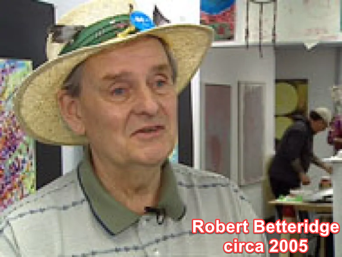

HOME
Robert Betteridge was born in the same year when the Hindenberg fell-- on May 6, 1937. He says destiny is what led him to his art career.
He was born in a little town called Neptune, about 50 miles south from Weyburn. The first of his artwork to gain notoriety were called "Golgothan Day Requiem" and "Cyclopean Repeas."
He had a gallery on Sunset Boulevard, and he has 2 siblings. His most recent piece of art is an audio CD with 46 minutes of him talking. He never made money from his art and it's all
non-profit. His hobbies beside art is daydreaming and thinking, leaving marks and poetry.
